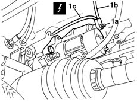
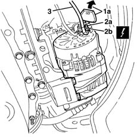

5530B36 CABLE between STARTER MOTOR and ALTERNATOR - R.R.
- Path
- Procedures > 55 ELECTRICAL EQUIPMENT > 5530 CURRENT GENERATOR > 5530B battery and leads > 5530B36 CABLE between STARTER MOTOR and ALTERNATOR - R.R.
- Kind
- repair procedure (removal / refitting; the operation number is the code)
- Applies to
- all engines; all production periods
- Interactive page
- https://sloeber94.github.io/elrnDB-lYpsln/en/#/2429400
Applies to: all engines; all production periods
 Removing
Removing
 Refitting
RefittingPlace the vehicle on a lift.
Raise the car.
1. Undo the nut (1a) and disconnect the electrical connections (1b, 1c) from the starter motor.
 | Name | Connector |
|---|---|---|
1 | Starter' motor |

Applies to: all engines; all production periods
1. Release the cover (1a) for the alternator electrical connections and open it.
2. Undo the nut (2a) and disconnect the electrical connection (2b).
| Name | Connector |
|---|---|---|
2b | Alternator |
3. Keep the wiring.

Applies to: all engines; all production periods
Refitting
RemovingCheck that the wiring is not damaged and test the electrical continuity.
Position the connection on the alternator and secure it using the nut.
 | Fastening | Component | Ø | Value (daNm) |
|---|---|---|---|---|
- | Nut | M8 |
Close the cover.
Position the connection on the starter mtor and secure it using the nut.
| Fastening | Component | Ø | Value (daNm) |
|---|---|---|---|---|
- | Nut | M8 |
Test the electrical system.